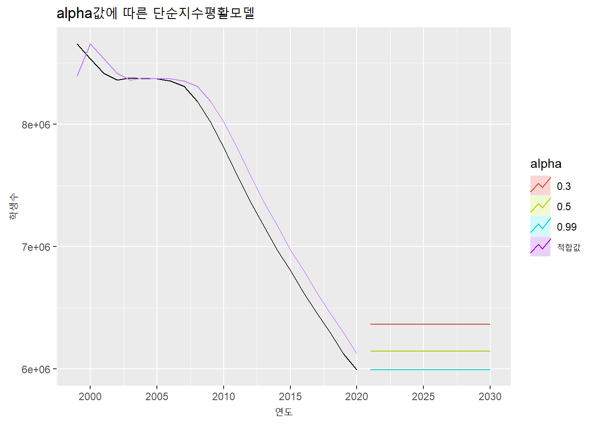
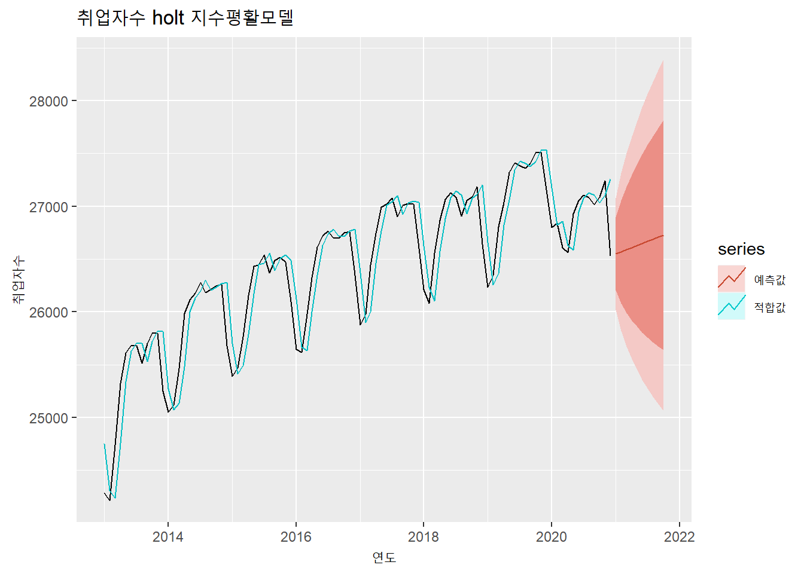
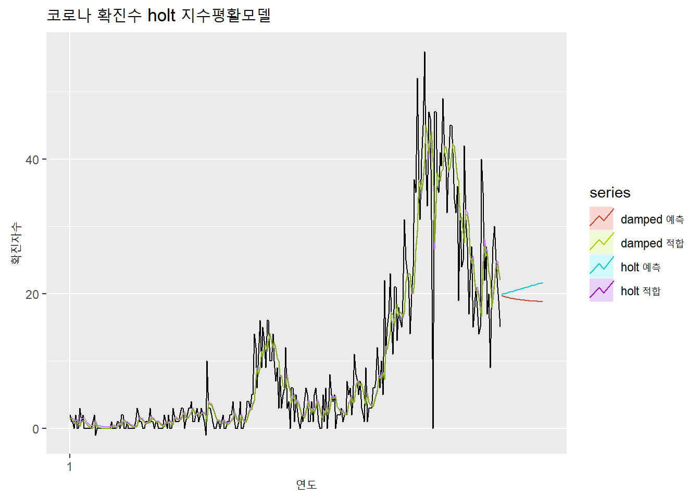
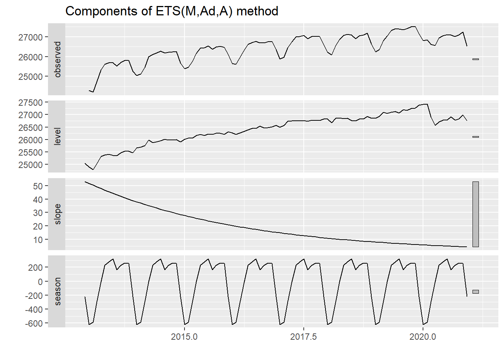

6.6 지수 평활(Exponential Smoothing) 모델
지수 평활 모델은 1950년대에 제안된 모델로 랜덤 워크(Random Walk) 모델과 같이 시계열 데이터는 최근의 값이 현재의 값에 가장 영향을 미친다는 점에 착안하여 나온 모델이다. 다만 랜덤 워크 모델과 같이 마지막 값에 모든 가중치를 둬서 일정하게 유지하는 것이 아닌 현재와 가까운 과거일수록 더 많은 가중치를 주는 방식으로 예측하는 방법이다.7
최근의 데이터에 가중치를 높게 주기 때문에 추세, 계절성, 순환성이 심하지 않은 단기 데이터의 모델링에 적합한 방법이다. 추세나 계절성이 없는 데이터에 적합한 ’단순 지수평활 모델(Simple Exponential Smoothign), 추세가 있는 데이터에 적합한 홀트(Holt) 모델, 추세와 계절성이 있는 데이터에 적합한 홀트-윈터(Holt-Winter) 모델 등이 있다.
지수 평활 모델에서 핵심적인 변수는 평활 계수이다. 평활 매개변수는 앞서 설명한 현재와 가까운 과거에 할당하는 가중치를 의미한다. 평활 매개변수은 보통 0에서 1사이의 변수인데 홀트 모델이나 홀트-윈터 모델에서는 추가적인 계수가 추가될 수 있다. 이고 이 가중치를 어떻게 설정하는 가에 따라 예측 모델의 성능도 달라질 수 있다.
필자는 처음 이 모델을 접했을때 왜 지수(Exponential)과 평활(Smoothing) 이라는 이름을 사용했는지 궁금했다. 평활 매개변수를 설명하는 과정에서 명칭에서 지수를 붙인 이유는 설명이 되겠지만 아직도 평활이라는 이름을 붙인 이유는 명쾌하게 이해되지는 않는다. 시계열 데이터에 대한 추세선을 부드럽게, 스무딩하게 만드는 모델이라고 생각이 되나 사실 홀트-윈터 모델을 보면 별로 부드럽지 않다는 느낌이 들어서 이 부분에 대해 잘 아시는 분은 알려주시길 부탁드린다.
6.6.1 단순 지수 평활 모델(Simple Exponentail Smoothing Model)
단순 지수 평활 모델은 추세, 계절성 등의 시계열적 특성이 비교적 약한 데이터에 적합한 예측 모델이다. 단순 지수 평활 모델을 사용하기 위해서는 우선 평활 계수를 설정해아한다.
평활 계수는 과거치에 대한 가중치로 현재에 가장 가까운 첫번째 과거 데이터에 대한 가중치이다. 이후 가중치 들은 1에서 가중치를 뺀 가중치(1-평활계수)로 설정하고 과거로 계속 갈수록 (1-평활계수)를 계속 곱해서 가중치를 할당한다. 평활 계수를 0.5로 가정하고 학생수 예에 적용해 보면 다음의 표와 같이 가중치가 설정되게 된다. 평활 계수가 지수형태로 계산되기 때문에 평활계수의 합은 1이 될 수 없다.
| 연도 | 가중치(평활계수 = 0.5) |
|---|---|
| 2020 | 0.5 |
| 2019 | 0.25 = (1 - 0.5) |
| 2018 | 0.125 = (1 - 0.5) * (1 - 0.5) |
| 2017 | 0.0625 = (1 - 0.5) * (1 - 0.5) * (1 - 0.5) |
| … | … |
6.6.1.1 forecast::ses() 함수
단순 지수 평활 모델을 적용하는 방법은 forecast 패키지의 ses() 함수를 사용하면 모델을 구축할 수 있다. ses() 함수에서는 평활 계수를 alpha 매개변수를 통해 설정할 수 있지만 설정하지 않으면 자동으로 계산하여 설정해준다. ses() 함수는 뒤에서 설명하는 홀트 모델, 홀트-윈터 모델도 beta와 gamma 매개변수를 통해 생성할 수 있다.
ses() 함수를 통해 생성되는 모델은 몇가지 특성값을 가지는데 앞에서 설명한 평활계수가 alpha로 표현되고 초기상태값인 l 값이 나타난다. 단순 지수 평활 모델은 한단계씩 예측해나가는 방법(One Step Forecast)이기 때문에 초기값인 l값부터 시작하여 한단계 앞 값을 예측하고 또 다음 단계를 예측하는 방법으로 수행된다. l 값을 산출하는 방법은 Rob Hyndman의 저서에서 확인할 수 있다.8 이는 ses() 모델을 summary() 함수를 통해 실행시키면 확인이 가능하다.
아래의 총학생수에 대한 ses()의 alpha 계수는 0.999로 계산되었다. 이는 거의 1과 가깝기 때문에 바로 이전 데이터에 거의 모든 가중치를 다 준 것이고 이로 인해 결국 Naive 모델과 거의 같은 모델이 생성되었다. 만약 alpha값을 강제로 낮추어 준다면 어떻게 될까? 아래의 코드를 잘 살펴보길 바란다.
### 전체 학생수에 대한 Simple Exponential Smoothing
ses(students.ts[,2]) %>% summary()##
## Forecast method: Simple exponential smoothing
##
## Model Information:
## Simple exponential smoothing
##
## Call:
## ses(y = students.ts[, 2])
##
## Smoothing parameters:
## alpha = 0.9999
##
## Initial states:
## l = 8394600.8229
##
## sigma: 162570.5
##
## AIC AICc BIC
## 599.8562 601.1896 603.1294
##
## Error measures:
## ME RMSE MAE MPE MAPE MASE ACF1
## Training set -109072.2 155004.8 134671.7 -1.552769 1.849053 1.047911 0.4105529
##
## Forecasts:
## Point Forecast Lo 80 Hi 80 Lo 95 Hi 95
## 2021 5995252 5786909 6203594 5676619 6313884
## 2022 5995252 5700626 6289878 5544660 6445843
## 2023 5995252 5634416 6356087 5443401 6547102
## 2024 5995252 5578598 6411905 5358035 6632468
## 2025 5995252 5529421 6461082 5282825 6707678
## 2026 5995252 5484962 6505542 5214830 6775673
## 2027 5995252 5444077 6546427 5152302 6838201
## 2028 5995252 5406022 6584481 5094103 6896401
## 2029 5995252 5370280 6620223 5039440 6951063
## 2030 5995252 5336474 6654029 4987739 7002765autoplot(students.ts[,2]) +
autolayer(fitted(ses(students.ts[,2])), series = '적합값') +
autolayer(ses(students.ts[,2])) +
labs(title = '단순지수평활모델', x = '연도', y = '학생수')
autoplot(students.ts[,2]) +
autolayer(fitted(ses(students.ts[,2])), series = '적합값') +
autolayer(ses(students.ts[,2]), PI = F, series = '0.99') +
autolayer(ses(students.ts[,2], alpha = 0.5), PI = F, series = '0.5') +
autolayer(ses(students.ts[,2], alpha = 0.3), PI = F, series = '0.3') +
labs(title = 'alpha값에 따른 단순지수평활모델', x = '연도', y = '학생수', color = 'alpha')
### 전체 취업자수에 대한 Simple Exponential Smoothing
autoplot(employees.ts[,2]) +
autolayer(fitted(ses(employees.ts[,2])), series = '적합값') +
autolayer(ses(employees.ts[,2]), series = 'auto', PI = F) +
autolayer(ses(employees.ts[,2], alpha = 0.3), series = '0.3', PI = F) +
autolayer(ses(employees.ts[,2], alpha = 0.5), series = '0.5', PI = F) +
autolayer(ses(employees.ts[,2], alpha = 0.7), series = '0.7', PI = F) +
labs(title = 'alpha값에 따른 단순지수평활모델', x = '연도', y = '취업자수', color = 'alpha')### 코로나 신규확진자수(0-9세)에 대한 Simple Exponential Smoothing
autoplot(covid19.ts[,2]) +
autolayer(fitted(ses(covid19.ts[,2])), series = '적합값') +
autolayer(ses(covid19.ts[,2], h = 30), series = 'auto', PI = F) +
autolayer(ses(covid19.ts[,2], alpha = 0.3, h = 30), series = '0.3', PI = F) +
autolayer(ses(covid19.ts[,2], alpha = 0.5, h = 30), series = '0.5', PI = F) +
autolayer(ses(covid19.ts[,2], alpha = 0.7, h = 30), series = '0.7', PI = F) +
labs(title = 'alpha값에 따른 단순지수평활모델', x = '연도', y = '확진자수', color = 'alpha')평활 계수가 클수록 데이터 변화에 빠르게 반응하여 예측의 감응도가 높지만 평활계수가 작으면 데이터의 변화에 느리게 반응하여 예측의 안정성이 높아진다9
### 전체 학생수의 alpha 값에 따른 적합치와 예측치의 변화
autoplot(students.ts[,2], color = 'black') +
autolayer(fitted(ses(students.ts[,2], alpha = 0.1)), series = '0.1') +
autolayer(ses(students.ts[,2], alpha = 0.1, PI = FALSE), series = '0.1') +
autolayer(fitted(ses(students.ts[,2], alpha = 0.2)), series = '0.2') +
autolayer(ses(students.ts[,2], alpha = 0.2, PI = FALSE), series = '0.2') +
autolayer(fitted(ses(students.ts[,2], alpha = 0.3)), series = '0.3') +
autolayer(ses(students.ts[,2], alpha = 0.3, PI = FALSE), series = '0.3') +
autolayer(fitted(ses(students.ts[,2], alpha = 0.4)), series = '0.4') +
autolayer(ses(students.ts[,2], alpha = 0.4, PI = FALSE), series = '0.4') +
autolayer(fitted(ses(students.ts[,2], alpha = 0.5)), series = '0.5') +
autolayer(ses(students.ts[,2], alpha = 0.5, PI = FALSE), series = '0.5') +
autolayer(fitted(ses(students.ts[,2], alpha = 0.6)), series = '0.6') +
autolayer(ses(students.ts[,2], alpha = 0.6, PI = FALSE), series = '0.6') +
autolayer(fitted(ses(students.ts[,2], alpha = 0.7)), series = '0.7') +
autolayer(ses(students.ts[,2], alpha = 0.7, PI = FALSE), series = '0.7') +
autolayer(fitted(ses(students.ts[,2], alpha = 0.8)), series = '0.8') +
autolayer(ses(students.ts[,2], alpha = 0.8, PI = FALSE), series = '0.8') +
autolayer(fitted(ses(students.ts[,2], alpha = 0.9)), series = '0.9') +
autolayer(ses(students.ts[,2], alpha = 0.9, PI = FALSE), series = '0.9') +
labs(title = 'alpha값에 따른 단순지수평활모델', x = '연도', y = '학생수', color = 'alpha')
6.6.2 홀트(Holt) 모델
홀트(holt) 모델은 지수 평활 모델을 확장하여 추세를 반영하는 모델이다. 홀트 모델은 추세조정 지수평활법이나 이중 지수 평활법으로 불리기도 한다. 추세를 반영하기 위해 평활 계수인 alpha와 추세 기울기 값 beta를 사용하여 모델을 세운다. 평활 계수 값과 마찬가지로 추세 기울기 값도 0과 1사이의 값을 지니고 이 값을 반영한 이동평균을 통해 예측값을 산출한다.
6.6.2.1 forecast::holt()
홀트 모델은 앞선 단순 지수 평활 모델에 사용했던 ses() 함수에 추세 기울기 값인 beta 값을 추가하여 사용할 수도 있고 forecast 패키지에서 제공하는 holt() 함수를 사용하여 모델을 생성할 수도 있다. 다만 alpha, beta 등의 매개변수를 지정하지 않으면 자동 계산되어 적절한 값이 사용된다.
### 전체 학생수에 대한 Holt modeling
summary(holt(students.ts[,2]))##
## Forecast method: Holt's method
##
## Model Information:
## Holt's method
##
## Call:
## holt(y = students.ts[, 2])
##
## Smoothing parameters:
## alpha = 0.8654
## beta = 0.8654
##
## Initial states:
## l = 8966192.6427
## b = -36934.0002
##
## sigma: 82114.94
##
## AIC AICc BIC
## 571.4867 575.2367 576.9419
##
## Error measures:
## ME RMSE MAE MPE MAPE MASE ACF1
## Training set -5106.807 74275.76 46971.89 -0.0472354 0.5836661 0.365499 -0.00685211
##
## Forecasts:
## Point Forecast Lo 80 Hi 80 Lo 95 Hi 95
## 2021 5855531 5750297 5960766 5694589 6016474
## 2022 5721369 5511013 5931725 5399658 6043081
## 2023 5587207 5242397 5932018 5059866 6114549
## 2024 5453045 4951452 5954638 4685925 6220166
## 2025 5318883 4641431 5996336 4282810 6354957
## 2026 5184721 4314366 6055077 3853627 6515816
## 2027 5050559 3971709 6129409 3400601 6700518
## 2028 4916397 3614582 6218212 2925443 6907352
## 2029 4782235 3243885 6320586 2429531 7134940
## 2030 4648073 2860364 6435783 1914007 7382139결과 설명
Smoothing parameter : 예측 수준(level)을 결정하는 alpha 평활지수는 0.8654이고 추세를 나타내는 beta 평활지수는 0.8654로 계산됨
Initial states : 예측수준(level)의 초기치는 8966192이고 추세의 초기치는 -36934로 계산됨
### 전체 학생수에 대한 Holt modeling
autoplot(students.ts[,2]) +
autolayer(fitted(holt(students.ts[,2])), series = '적합값') +
autolayer(holt(students.ts[,2]), series = '예측값') +
labs(title = '학생수 holt 지수평활모델', x = '연도', y = '학생수')
### 전체 취업자수에 대한 Holt modeling
autoplot(employees.ts[,2]) +
autolayer(fitted(holt(employees.ts[,2])), series = '적합값') +
autolayer(holt(employees.ts[,2]), series = '예측값') +
labs(title = '취업자수 holt 지수평활모델', x = '연도', y = '취업자수')
### 코로나 신규확진자수(0-9세)에 대한 Holt modeling
autoplot(covid19.ts[,2]) +
autolayer(fitted(holt(covid19.ts[,2])), series = '적합값') +
autolayer(holt(covid19.ts[,2], h = 30), series = '예측값') +
labs(title = '코로나 확진수 holt 지수평활모델', x = '연도', y = '확진자수')
홀트 모델은 위와 같이 일정한 증가, 감소가 나타난다. 추세가 증가 추세이면 예측값이 계속 증가하게 되고 감소추세이면 계속 감소하게 된다. 특히 감소추세 일때 계속 감소하면 어느 순간 음수값을 가질수도 있다. 따라서 감소 추세가 있는 경우 어느정도에서 감소추세를 지연시킬 필요가 있다. holt() 함수에서는 damped 매개변수를 통해 감소추세를 지연시킬 수 있다.
### 전체 학생수에 대한 Holt modeling 비교
autoplot(students.ts[,2]) +
autolayer(fitted(holt(students.ts[,2])), series = 'holt 적합') +
autolayer(fitted(holt(students.ts[,2], damped = TRUE)), series = ' damped 적합') +
autolayer(holt(students.ts[,2]), series = 'holt 예측', PI = FALSE) +
autolayer(holt(students.ts[,2], damped = TRUE), series = 'damped 예측', PI = FALSE) +
labs(title = '학생수 damped holt 지수평활모델', x = '연도', y = '학생수')
### 전체 취업자수에 대한 Holt modeling 비교
autoplot(employees.ts[,2]) +
autolayer(fitted(holt(employees.ts[,2])), series = 'holt 적합') +
autolayer(fitted(holt(employees.ts[,2], damped = TRUE)), series = 'damped 적합') +
autolayer(holt(employees.ts[,2]), series = 'holt 예측', PI = FALSE) +
autolayer(holt(employees.ts[,2], damped = TRUE), series = 'damped 예측', PI = FALSE) +
labs(title = '취업자수 damped holt 지수평활모델', x = '연도', y = '취업자수')
### 코로나 신규확진자수(0-9세)에 대한 Holt modeling 비교
autoplot(covid19.ts[,2]) +
autolayer(fitted(holt(covid19.ts[,2])), series = 'holt 적합') +
autolayer(fitted(holt(covid19.ts[,2], damped = TRUE)), series = 'damped 적합') +
autolayer(holt(covid19.ts[,2], h = 30), series = 'holt 예측', PI = FALSE) +
autolayer(holt(covid19.ts[,2], h = 30, damped = TRUE), series = 'damped 예측', PI = FALSE) +
labs(title = '코로나 확진수 holt 지수평활모델', x = '연도', y = '확진자수')
추세 기울기 값에 따른 변동은 아래 plot과 같이 나타난다. 사실상 추세 기울기 값은 결과값에 큰 차이를 나타내지 않는다.
autoplot(students.ts[,2]) +
autolayer(fitted(holt(students.ts[,2], beta = 0.1)), series = '0.1') +
autolayer(holt(students.ts[,2], beta = 0.1, PI = F), series = '0.1') +
autolayer(fitted(holt(students.ts[,2], beta = 0.2)), series = '0.2')+
autolayer(holt(students.ts[,2], beta = 0.2, PI = F), series = '0.2') +
autolayer(fitted(holt(students.ts[,2], beta = 0.3)), series = '0.3')+
autolayer(holt(students.ts[,2], beta = 0.3, PI = F), series = '0.3') +
autolayer(fitted(holt(students.ts[,2], beta = 0.4)), series = '0.4')+
autolayer(holt(students.ts[,2], beta = 0.4, PI = F), series = '0.4') +
autolayer(fitted(holt(students.ts[,2], beta = 0.5)), series = '0.5')+
autolayer(holt(students.ts[,2], beta = 0.5, PI = F), series = '0.5') +
autolayer(fitted(holt(students.ts[,2], beta = 0.6)), series = '0.6')+
autolayer(holt(students.ts[,2], beta = 0.6, PI = F), series = '0.6') +
autolayer(fitted(holt(students.ts[,2], beta = 0.7)), series = '0.7')+
autolayer(holt(students.ts[,2], beta = 0.7, PI = F), series = '0.7') +
autolayer(fitted(holt(students.ts[,2], beta = 0.8)), series = '0.8')+
autolayer(holt(students.ts[,2], beta = 0.8, PI = F), series = '0.8') +
autolayer(fitted(holt(students.ts[,2], beta = 0.9)), series = '0.9')+
autolayer(holt(students.ts[,2], beta = 0.9, PI = F), series = '0.9') +
labs(title = 'beta값에 따른 holt지수평활모델', x = '연도', y = '학생수', color = 'beta')
6.6.3 홀트-윈터(Holt-Winter) 모델
홀트-윈터(Holt-Winter) 모델은 단순 지수 평활 모델을 확장하여 추세와 계절성을 반영하는 모델이다. 홀트-윈터 모델은 ses 모델의 alpha, 홀트 모델의 beta에 계절 매개변수인 gamma까지 포함하기 때문에 삼중 지수 평활법이나 계절조정 지수 평활법이라고도 한다.
홀트-윈터 모델은 덧셈 방법(additive)와 곱셈 방법(multiplicative)의 두가지 방법이 있다.
앞서 시계열 분해에서 설명했듯히 덧셈 방법은 계절성의 변화 비교적 일정하게 나타날때 사용하는 방법이고 곱셈 방법은 계절성의 진폭이 추세에 비례하여 변동이 있을때 사용하는 방법이다. 따라서 미래 예측치를 산출할 때도 덧셈 방법은 예측치가 크게 변동되지 않지만 곱셈 방법은 먼 미래일 수록 예측값이 커지게 된다.
6.6.3.1 forecast::hw() 함수
홀트-윈터 모델을 생성하기 위해서는 forecast 패키지의 hw()를 사용한다. 홀트윈터모델도 앞선 홀트 모델과 같이 ses() 함수에 추세 기울기 값인 beta 값과 계절 변수인 gamma 값을 추가하여 사용할 수도 있고 hw() 함수를 사용하여 모델을 생성할 수도 있다. 다만 alpha, beta 등의 매개변수를 지정하지 않으면 자동 계산되어 적절한 값이 사용된다.
덧셈 방법과 곱셈 방법을 사용하는 방법은 hw() 함수에서 seasonal 매개변수를 통해 설정할 수 있다. seasonal 매개변수를 ‘additive’로 설정하면 덧셈 방법,’multiplicative’를 설정하면 곱셈 방법을 사용하여 모델이 구축된다.
사실상 뎃셈 방법과 곱셈 방법 중 어느 방법을 선택해야하는 지를 선택하는 방법은 시각적으로 확인하거나 다음 장에서 설명할 모델 성능 비교 방법을 통해 선택해야한다.
연간 데이터인 전체 학생수는 계절성을 찾을수 없기 때문에 hw()를 적용하면 다음과 같은 오류를 발생시킨다.
hw(students.ts[,2])## Error in hw(students.ts[, 2]): The time series should have frequency greater than 1.아래는 총 취업자수에 대한 홀트윈터 모델 plot이다. 덧셈방법과 곱셈방법의 두가지 plot을 보여주고 있다.
autoplot(employees.ts[,2]) +
autolayer(fitted(hw(employees.ts[,2])), series = 'hw 적합값') +
autolayer(hw(employees.ts[,2], seasonal = 'additive'), PI = FALSE, series = 'additive') +
autolayer(hw(employees.ts[,2], seasonal = 'multiplicative'), PI = FALSE, series = 'multiplicative') +
labs(title = '취업자수 holt winter 지수평활모델', x = '연도', y = '취업자수')6.6.4 ETS 모델
ETS 모델은 Error, Trend, Season의 앞글자만 따서 만들었다고도 하고 ExponenTial Smoothing의 약자라고도 한다. 앞에 설명한 지수 평활 모델을 잔차(실제값 - 적합값)로 보정한 모델이다.
ETS 모델은 모델을 구성하는 방법에 따라 여러가지 모델로 구분될 수 있다. 각 모델은 데이터의 측정식(measurement equation)과 측정식에서 추출된 추세, 계절성 등을 통해 추정되는 미래 예측값에 대한 상태식(state equation)에 따라 결정되는데 이를 상태공간모델(status space model)이라고 한다.10
상태공간모델에 의한 ETS 모델은 Error에 의한 덧셈 보정(A), 곱셈 보정(M), 추세에 따른 덧셈 방법(A), 감쇄 덧셈 방법(Ad), 추세 없음(N), 계절성에 따른 계절성 없음(N), 덧셈 계절성(A), 곱셈 계절성(M)으로 구분된다. 이 8가지 방법을 활용하여 최종 ETS 모델을 결정할 수 있는데 모든 조합이 모델이 되지는 않는다. 다음은 조합이 가능한 모든 상태공간모델이다. 이 중 일부는 덧셈 혹은 곱셈 보정에 따라 앞서 설명한 단순지수평활모델, 홀트모델, damped 홀트모델, 홀트윈터모델과 동일한 모델도 있다.
- 보정방법 : 덧셈 보정(A)
| 덧셈 추세(A) | 감쇄 덧셈 추세(Ad) | 추세없음(N) | |
|---|---|---|---|
| 덧셈 계절성(A) | (A, A, A) = 덧셈 홀트윈터 | (A, Ad, A) | (A, N, A) |
| 곱셈 계절성(M) | (A, A, M) = 곱셈 홀트윈터 | (A, Ad, M) = 감쇄 홀트 윈터 | (A, N, M) |
| 계절성 없음(N) | (A, A, N) = 홀트 선형 | (A, Ad, N) = 감쇄 추세 | (A, N, N) = 단순평활 |
- 보정방법 : 곱셈 보정(M)
| 덧셈 추세(A) | 감쇄 덧셈 추세(Ad) | 추세없음(N) | |
|---|---|---|---|
| 덧셈 계절성(A) | (M, A, A) = 덧셈 홀트윈터 | (M, Ad, A) | (M, N, A) |
| 곱셈 계절성(M) | (M, A, M)= 곱셈 홀트윈터 | (M, Ad, M) = 감쇄 홀트 윈터 | (M, N, M) |
| 계절성 없음(N) | (M, A, N)= 홀트 선형 | (M, Ad, N) = 감쇄 추세 | (M, N, N) = 단순평활 |
forecast 패키지의 ets() 함수에는 상태공간모델을 지정할 수 있지만 ets() 함수에서 자동적으로 선정해준다. ets 모델을 autoplot()에 적용시키면 각각의 성분별로 plot을 확인할 수 있다.
### 총학생수에 대한 ets 모델
ets(students.ts[,2]) %>% summary## ETS(A,Ad,N)
##
## Call:
## ets(y = students.ts[, 2])
##
## Smoothing parameters:
## alpha = 0.8929
## beta = 0.8929
## phi = 0.9401
##
## Initial states:
## l = 8930071.6714
## b = -36934.5936
##
## sigma: 74403.08
##
## AIC AICc BIC
## 567.8898 573.4898 574.4361
##
## Training set error measures:
## ME RMSE MAE MPE MAPE MASE ACF1
## Training set -13547.67 65403.96 42008.54 -0.1655554 0.523083 0.326878 0.007506032결과 설명
ETS(A, Ad N) : ETS모델로 덧셈 보정, 감쇄 추세, 계절성 없음 모델이 선정됨 - 덧셈 보정 감쇄 추세 모델
Smooting parameters : 레벨 평활 계수는 0.8929, 추세 평활 계수는 0,8929, 감쇄(damped) 평활 계수는 0.9401로 설정
Initial states : 레벨 초기 상태와 추세 초기상태 설정
ets(students.ts[,2]) %>% autoplot() ### 전체 학생수에 대한 ets 모델 ploting### 전체 학생수에 대한 예측치 ploting
ets(students.ts[,2]) %>% forecast() %>%
autoplot() +
labs(x = '연도', y = '학생수')ets(employees.ts[,2]) ### ETS(M,Ad,A)로 모델 선정## ETS(M,Ad,A)
##
## Call:
## ets(y = employees.ts[, 2])
##
## Smoothing parameters:
## alpha = 0.9989
## beta = 1e-04
## gamma = 2e-04
## phi = 0.9744
##
## Initial states:
## l = 25055.6086
## b = 53.1073
## s = -222.3076 255.8486 261.7129 227.3178 163.5351 319.1916
## 274.8844 226.215 -5.605 -294.4144 -588.041 -618.3374
##
## sigma: 0.0045
##
## AIC AICc BIC
## 1372.968 1381.851 1419.126결과 설명
ETS(M, Ad A) : ETS모델로 곱셈 보정, 감쇄 덧셈 추세, 덧셈 계절성 모델이 선정됨
Smooting parameters : 레벨 평활 계수는 0.9989, 추세 평활 계수는 0.0001, 계절 평활계수는 0.0002, 감쇄(damped) 평활 계수는 0.9744로 설정
Initial states : 레벨 초기 상태와 추세, 계절성 초기상태 설정
ets(employees.ts[,2]) %>% autoplot()
ets(employees.ts[,2]) %>% forecast() %>%
autoplot() +
labs(x = '연도', y = '취업자수')
결과 설명
Smoothing parameters: 지수평활의 가중치로 사용할 alpha값이 0.9999
Initial states : 지수평활의 시작점 위치